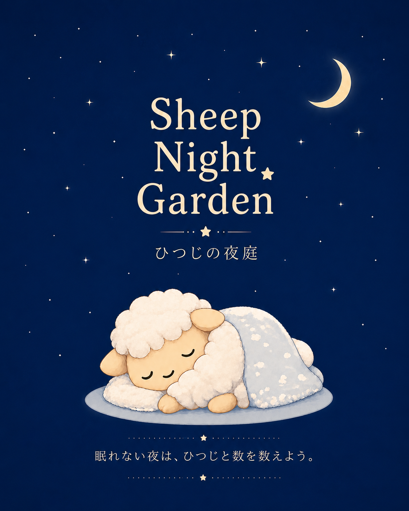

眠れない夜は、ひつじを少しだけ眺めていこう。

眠れない夜に、ひつじたちの静かな暮らしを眺めたり、ひつじを数えたりするアプリです。
・BGMを選んで夜の空気を楽しめます
・ひつじや素数をゆっくり数えることができます
・本日または昨日の、数えたひつじの記録も残ります
v1.0.0 (Web Edition)
・ひつじカウント機能追加
・BGM切り替え追加
アプリ内BGMには、素敵なフリーBGM・環境音を使用させていただいております。
アプリ内のイラストにはAI生成画像を使用しております。
「ひつじの夜庭」（以下、「本アプリ」）では、ユーザーの個人情報を収集・保存・共有することはありません。
本アプリは、端末内でのみ動作し、外部サーバーへの個人データ送信は行っておりません。
なお、将来的に機能追加等によりプライバシーポリシーを変更する場合があります。
© 2026 Nozomi Kako